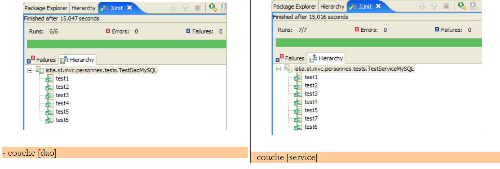
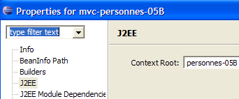
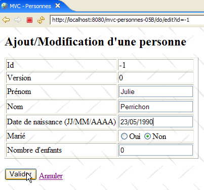
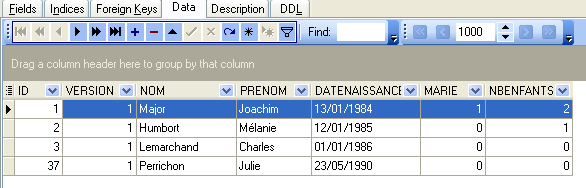

19. MVC-Webanwendung in einer 3-Schichten-Architektur – Beispiel 5, MySQL
19.1. Die MySQL-Datenbank
In dieser Version speichern wir die Liste der Personen in einer MySQL 4.x-Datenbanktabelle. Wir haben das unter der URL [http://www.easyphp.org] verfügbare Paket [Apache – MySQL – PHP] verwendet. Die folgenden Screenshots stammen aus dem MySQL Manager Lite-Client [http://www.sqlmanager.net/fr/products/mysql/manager], einem kostenlosen Verwaltungsclient für das MySQL-DBMS.
Die Datenbank trägt den Namen [dbpersonnes]. Sie enthält eine Tabelle namens [PERSONNES]:

Die Tabelle [PERSONNES] enthält die Liste der Personen, die von der Webanwendung verwaltet werden. Sie wurde mit den folgenden SQL-Anweisungen erstellt:
MySQL 4.x scheint weniger leistungsfähig zu sein als die beiden vorherigen DBMS. Ich konnte der Tabelle keine Einschränkungen (Prüfungen) hinzufügen.
- Zeile 10: Die Tabelle muss vom Typ [InnoDB] sein und nicht [MyISAM], da dieser Transaktionen nicht unterstützt.
- Zeile 2: Der Primärschlüssel ist vom Typ auto_increment. Wenn eine Zeile ohne Wert für die ID-Spalte der Tabelle eingefügt wird, generiert MySQL automatisch eine Ganzzahl für diese Spalte. Dadurch müssen wir die Primärschlüssel nicht selbst generieren.
Die Tabelle [PERSONNES] könnte folgenden Inhalt haben:

Wir wissen, dass beim Einfügen eines [Person]-Objekts über unsere [DAO]-Schicht das Feld [id] dieses Objekts vor dem Einfügen den Wert -1 hat und danach einen anderen Wert als -1; dieser Wert ist der Primärschlüssel, der der neuen, in die Tabelle [PERSONNES] eingefügten Zeile zugewiesen wird. Schauen wir uns ein Beispiel an, um zu sehen, wie wir diesen Wert ermitteln können.
 |
 |
Die SQL-Anweisung
ermöglicht es uns, den zuletzt in das ID-Feld der Tabelle eingefügten Wert zu ermitteln. Sie muss nach dem Einfügen ausgeführt werden. Dies unterscheidet sich von den DBMS [Firebird] und [Postgres], bei denen wir den Primärschlüsselwert der hinzugefügten Person vor dem Einfügen abgefragt haben. Wir werden sie in der Datei [people-mysql.xml] verwenden, die die in der Datenbank ausgeführten SQL-Anweisungen enthält.
19.2. Das Eclipse-Projekt für die [DAO]- und [Service]-Schichten
Um die [DAO]- und [Service]-Schichten unserer Anwendung mit der MySQL-Datenbank zu entwickeln, verwenden wir das folgende Eclipse-Projekt [mvc-personnes-05]:

Das Projekt ist ein einfaches Java-Projekt, kein Tomcat-Webprojekt.
[src]-Verzeichnis
Dieser Ordner enthält den Quellcode für die [dao]- und [service]-Schichten sowie die Konfigurationsdateien für diese beiden Schichten:

Alle Dateien, deren Namen [mysql] enthalten, wurden möglicherweise für die Firebird- und Postgres-Versionen angepasst. Im Folgenden beschreiben wir diejenigen, die angepasst wurden.
Ordner [database]
Dieser Ordner enthält das Skript zum Erstellen der MySQL-Datenbank für Benutzer:

Ordner [lib]
Dieses Verzeichnis enthält die von der Anwendung benötigten Dateien:
 |
Beachten Sie den vorhandenen JDBC-Treiber für das MySQL-DBMS. Alle diese Dateien sind Teil des Klassenpfads des Eclipse-Projekts.
19.3. Die [dao]-Schicht
Die [dao]-Schicht sieht wie folgt aus:

Wir stellen hier nur die Änderungen gegenüber der [Firebird]-Version vor.
Die Mapping-Datei [person-mysql.xml] sieht wie folgt aus:
<?xml version="1.0" encoding="UTF-8" ?>
<!DOCTYPE sqlMap
PUBLIC "-//iBATIS.com//DTD SQL Map 2.0//EN"
"http://www.ibatis.com/dtd/sql-map-2.dtd">
<sqlMap>
<!-- alias class [Person] -->
<typeAlias alias="Personne.classe"
type="istia.st.mvc.personnes.entites.Personne"/>
<!-- mapping table [PERSONNES] - object [Person] -->
<resultMap id="Personne.map"
class="istia.st.mvc.personnes.entites.Personne">
<result property="id" column="ID" />
<result property="version" column="VERSION" />
<result property="nom" column="NOM"/>
<result property="prenom" column="PRENOM"/>
<result property="dateNaissance" column="DATENAISSANCE"/>
<result property="marie" column="MARIE"/>
<result property="nbEnfants" column="NBENFANTS"/>
</resultMap>
<!-- list of all persons -->
<select id="Personne.getAll" resultMap="Personne.map" > select ID, VERSION, NOM,
PRENOM, DATENAISSANCE, MARIE, NBENFANTS FROM PERSONNES</select>
<!-- get a specific person -->
<select id="Personne.getOne" resultMap="Personne.map" >select ID, VERSION, NOM,
PRENOM, DATENAISSANCE, MARIE, NBENFANTS FROM PERSONNES WHERE ID=#value#</select>
<!-- add a person -->
<insert id="Personne.insertOne" parameterClass="Personne.classe">
insert into
PERSONNES(VERSION, NOM, PRENOM, DATENAISSANCE, MARIE, NBENFANTS)
VALUES(#version#, #nom#, #prenom#, #dateNaissance#, #marie#,
#nbEnfants#)
<selectKey keyProperty="id">
select LAST_INSERT_ID() as value
</selectKey>
</insert>
<!-- update a person -->
<update id="Personne.updateOne" parameterClass="Personne.classe"> update
PERSONNES set VERSION=#version#+1, NOM=#nom#, PRENOM=#prenom#, DATENAISSANCE=#dateNaissance#,
MARIE=#marie#, NBENFANTS=#nbEnfants# WHERE ID=#id# and
VERSION=#version#</update>
<!-- delete a person -->
<delete id="Personne.deleteOne" parameterClass="int"> delete FROM PERSONNES WHERE
ID=#value# </delete>
<!-- obtain the value of the primary key [id] of the last person inserted -->
<select id="Personne.getNextId" resultClass="int">select
LAST_INSERT_ID()</select>
</sqlMap>
Dies ist derselbe Inhalt wie in [people-firebird.xml], mit den folgenden geringfügigen Unterschieden:
- Die SQL-Anweisung „Person.insertOne“ wurde in den Zeilen 29–37 geändert:
- Die SQL-Einsatzanweisung wird vor der SELECT-Anweisung ausgeführt, die den Primärschlüsselwert der eingefügten Zeile abruft
- Die SQL-Einsatzanweisung enthält keinen Wert für die Spalte „ID“ in der Tabelle [PERSONNES]
Dies entspricht dem Einfügebeispiel, das wir in Abschnitt 19.1 besprochen haben.
Beachten Sie, dass dies eine potenzielle Problemquelle zwischen parallel laufenden Threads sein kann. Stellen Sie sich zwei Threads vor, Th1 und Th2, die gleichzeitig eine Einfügung durchführen. Es sind insgesamt vier SQL-Anweisungen auszuführen. Angenommen, sie werden in der folgenden Reihenfolge ausgeführt:
- Einsetzen I1 durch Th1
- insert I2 von Th2
- select S1 von Th1
- select S2 von Th2
In Schritt 3 ruft Th1 den bei der letzten Einfügung generierten Primärschlüssel ab, bei dem es sich um den Schlüssel von Th2 und nicht um den eigenen handelt. Ich bin mir nicht sicher, ob die [insert]-Methode von iBATIS gegen dieses Szenario geschützt ist. Wir gehen davon aus, dass sie dies ordnungsgemäß handhabt. Wäre dies nicht der Fall, müssten wir die Implementierungsklasse [DaoImplCommon] aus der [dao]-Schicht in eine Klasse [DaoImplMySQL] ableiten, in der die [insertPersonne]-Methode synchronisiert würde. Dies würde das Problem jedoch nur für die Threads in unserer Anwendung lösen. Wenn es sich bei Th1 und Th2 im obigen Beispiel um Threads aus zwei verschiedenen Anwendungen handelt, müsste das Problem dann mithilfe von Transaktionen und einer geeigneten Isolationsstufe zwischen den Transaktionen gelöst werden. Die Stufe [serializable], bei der Transaktionen so ausgeführt werden, als würden sie sequenziell ablaufen, wäre hierfür geeignet.
Beachten Sie, dass dieses Problem bei den DBMS Firebird und Postgres nicht auftritt, da diese die SELECT-Anweisung vor der INSERT-Anweisung ausführen. Betrachten Sie beispielsweise die folgende Abfolge:
- select S1 from Th1
- SELECT S2 from Th2
- insert I1 from Th1
- insert I2 from Th2
In den Schritten 1 und 2 rufen Th1 und Th2 Primärschlüsselwerte aus demselben Generator ab. Dieser Vorgang ist normalerweise atomar, und Th1 und Th2 rufen zwei unterschiedliche Werte ab. Wäre der Vorgang nicht atomar und würden Th1 und Th2 zwei identische Werte abrufen, würde die in Schritt 4 von Th2 durchgeführte Einfügung aufgrund eines doppelten Primärschlüssels fehlschlagen. Dies ist ein vollständig behebbarer Fehler, und Th2 kann die Einfügung erneut versuchen.
Wir lassen die Operation „Personne.insertOne“ so, wie sie derzeit in der Datei [personnes-mysql.xml] steht, aber der Leser sollte sich bewusst sein, dass hier ein potenzielles Problem besteht.
Die Implementierungsklasse [DaoImplCommon] der [dao]-Schicht ist dieselbe wie in den beiden vorherigen Versionen.
Die Konfiguration der [dao]-Schicht wurde an das [MySQL]-DBMS angepasst. Daher sieht die Konfigurationsdatei [spring-config-test-dao-mysql.xml] wie folgt aus:
<?xml version="1.0" encoding="ISO_8859-1"?>
<!DOCTYPE beans SYSTEM "http://www.springframework.org/dtd/spring-beans.dtd">
<beans>
<!-- data source DBCP -->
<bean id="dataSource" class="org.apache.commons.dbcp.BasicDataSource"
destroy-method="close">
<property name="driverClassName">
<value>com.mysql.jdbc.Driver</value>
</property>
<property name="url">
<value>jdbc:mysql://localhost/dbpersonnes</value>
</property>
<property name="username">
<value>root</value>
</property>
<property name="password">
<value></value>
</property>
</bean>
<!-- SqlMapCllient -->
<bean id="sqlMapClient"
class="org.springframework.orm.ibatis.SqlMapClientFactoryBean">
<property name="dataSource">
<ref local="dataSource"/>
</property>
<property name="configLocation">
<value>classpath:sql-map-config-mysql.xml</value>
</property>
</bean>
<!-- the [dao] layer access classes -->
<bean id="dao" class="istia.st.mvc.personnes.dao.DaoImplCommon">
<property name="sqlMapClient">
<ref local="sqlMapClient"/>
</property>
</bean>
</beans>
- Zeilen 5–19: Die [dataSource]-Bean verweist nun auf die [MySQL]-Datenbank [dbpersonnes], deren Administrator [root] ist und die kein Passwort hat. Der Leser sollte diese Konfiguration entsprechend seiner eigenen Umgebung anpassen.
- Zeile 31: Die Klasse [DaoImplCommon] ist die Implementierungsklasse für die [dao]-Schicht
Nachdem diese Änderungen vorgenommen wurden, können wir mit dem Testen fortfahren.
19.4. Tests für die [dao]- und [service]-Schichten
Die Tests für die [dao]- und [service]-Schichten sind dieselben wie für die [Firebird]-Version. Die erzielten Ergebnisse lauten wie folgt:
 |
Wir sehen, dass die Tests mit der [DaoImplCommon]-Implementierung erfolgreich bestanden wurden. Wir müssen diese Klasse nicht ableiten, wie es beim [Firebird]-DBMS erforderlich war.
19.5. [Web]-Anwendungstests
Um die Webanwendung mit dem [MySQL]-DBMS zu testen, erstellen wir ein Eclipse-Projekt [mvc-personnes-05B] auf ähnliche Weise wie beim Erstellen des Projekts [mvc-personnes-03B] mit der Firebird-Datenbank (siehe Abschnitt 17.7). Wie bei Postgres müssen wir jedoch die Archive [personnes-dao.jar] und [personnes-service.jar] nicht neu erstellen, da wir keine Klassen geändert haben.
Wir stellen das Webprojekt [mvc-personnes-05B] in Tomcat bereit:
 |  |
Das MySQL-DBMS wird gestartet. Der Inhalt der Tabelle [PERSONNES] sieht dann wie folgt aus:

Anschließend wird Tomcat gestartet. Über einen Browser rufen wir die URL [http://localhost:8080/mvc-personnes-05B] auf:

Wir fügen über den Link [Hinzufügen] eine neue Person hinzu:
 |  |
Wir überprüfen den Eintrag in der Datenbank:

Der Leser ist eingeladen, weitere Tests durchzuführen [Bearbeiten, Löschen].